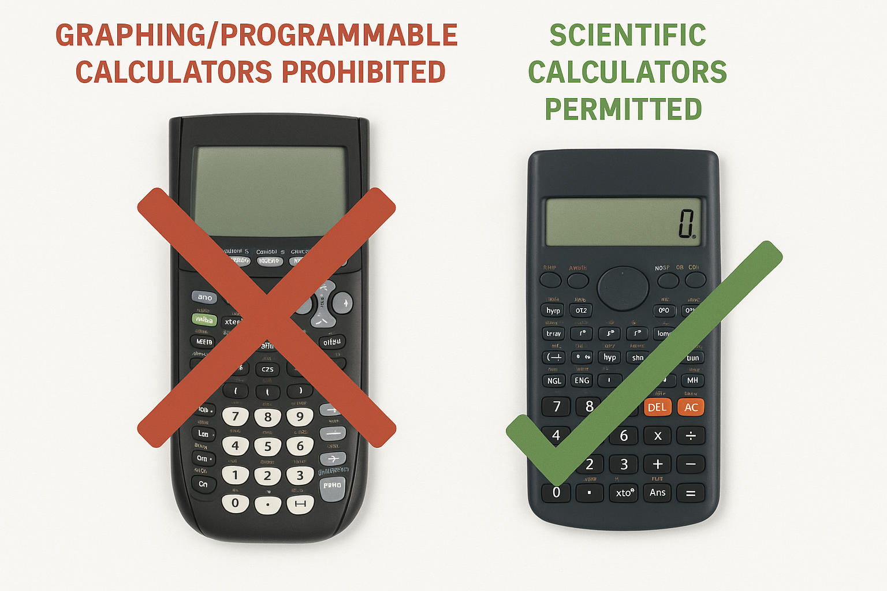

General Exam Information
The following applies to all exams in this course:- Closed book
- Format: Multiple choice and numeric entry.
- Materials provided: Formula sheet and scrap paper.
- Platform: Written on Canvas LMS, like the homework.
-
Device guidelines:
- Tablets/laptops must be upright, not flat on the desk.
- Screen brightness should be high for proctor visibility.
- No other apps or tabs open; the exam window must stay maximized.
- Paper option: Available for those without suitable devices.
- Content: Covers all lectures and required textbook readings up to the date of the exam, unless explicitly stated otherwise. (see syllabus).
- Missed Midterm Exam Session Information
Calculators
- Permitted Calculators: Only basic or scientific calculators are allowed. Graphing calculators, programmable calculators, or calculators on phones/devices are prohibited.
- Bring Your Own: Students must bring an approved calculator; none will be provided. Without one, you'll complete the exam without it.
- Academic Integrity: Unauthorized calculators will result in academic misconduct reports.
- Unsure about your calculator? Check the approved list or ask the instructor before the exam.

Midterm Information
- Date: Thursday November 6th
- Time: 14:00
- Location: CSC B-10
- Duration: 40 minutes
- Coverage: Covers all material up to (but not including) the discussion about compairing two means. That encompasses textbook chapters 1, 2, 3, 4.1, 5.1, and 7.1.
-
Midterm Countdown:
Final Exam Information
- Date: Thursday December 11th
- Time: 13:00
- Location: CSC B-10
- Duration: 120 minutes
- Coverage: Cumulative - includes all material from the start of term.
- Questions: 30 multiple choice; 12 calculation
-
Final Countdown:
Loading last updated time...